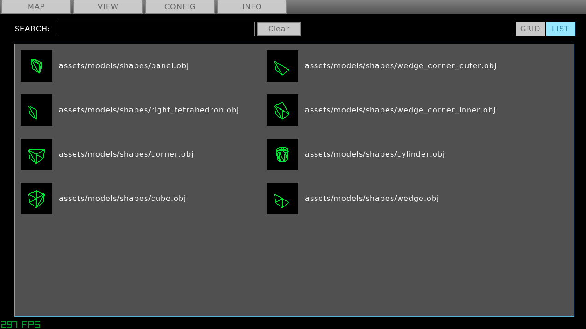

Total Editor 3 is designed to build 3D game levels out of small 3 dimensional tiles. Each tile has a "shape," which is a 3D model that you select from the editor, and a "texture," which is a 2D image that gets placed on the faces of the model. Tiles also have a rotation defined by "pitch" and "yaw," rotations on two axes.
The application starts in the map editor screen. In this screen you have a grid and a cursor. The cursor is surrounded by a magenta colored wireframe cube. Moving the mouse moves the cursor along the plane of the grid. Although the camera can move anywhere, edits to the map are only done on the layer indicated by the grid. The advantage is that the cursor can be moved inside and behind any tile on its designated layer. There are also colored lines visible in the corner of the grid labeled "XYZ," which represents the three axes of space. Notice that the direction of each letter from the center of the axes represents the positive direction; i.e. positive Y is up because the Y is on top. Using the mouse's scroll wheel will bring the grid up and down, along the Y axis. This movement is limited by the map's dimensions, which are set when the "new map" menu option is clicked.
The cursor begins in "tile mode," which means that it contains a tile that can be placed onto the grid by left clicking, and tiles in the grid can be erased by right clicking. The yaw rotation of the tile can be turned in 90 degree increments using the Q and E keys. The tile can be pitch rotated using the F and V keys. The angles can be reset by pressing R.

The texture of the tile can be chosen by pressing TAB. This will bring the editor into the "texture picker," where an array of images placed in the "assets/textures" folder relative to the application appear. Clicking on one will set the texture to be used by the cursor in the map editor. The text field near the top will allow the displayed textures to be filtered by their names. This filter also takes into account the file path of each texture, so typing in the name of a subdirectory will reveal textures within the subdirectory. Pressing TAB again will bring the user back to the map editor.
Pressing TAB while holding LEFT SHIFT while in the map editor will bring up the "shape picker." This is analogous to the texture picker, except instead of images it displays wireframe representations of several models found in the "assets/models/shapes" directory. These are a set of .obj files used as templates for the shape of each tile. Pressing TAB or LEFT SHIFT and TAB will bring the user back to the map editor.
When the cursor is over an existing tile on the grid, pressing T will copy the underlying tile's texture into the cursor's tile. Likewise, pressing G will copy the underlying tile's shape and orientation. This can help avoid losing time looking through the menus for frequently used shapes and textures.
When holding shift, the tile inside of the cursor disappears. This means the cursor is in rectangular mode. It is like tile mode, except the cursor's box expands from the point where shift was first held to the current position. Pressing left or right click will then place or remove tiles in the entire area. This makes it efficient for placing identical tiles in rows, columns, and rectangular chunks. The grid may be moved vertically using the scroll wheel while holding shift to create 3 dimensional rectangles.
This is a quick way to duplicate certain groups of tiles. When in the rectangular cursor mode mentioned above, pressing the B key will take all of the tiles inside of the rectangle and turn them into a "brush," putting the cursor into "brush mode." In this mode, the cursor will copy the entire structure of tiles into the grid using left click, instead of filling the area with a single tile type. This can be used to avoid rebuilding complex structures in multiple places. The cursor cannot erase anything using right click in this mode. Pressing ESCAPE or BACKSPACE will bring the cursor into its regular "tile mode."
Pressing H will remove all layers of tiles from view, except for the one the editor grid is on. This allows for fast editing of the interiors of rooms and the like. The grid cannot move into or edit the hidden layers. Pressing H again will reveal the hidden layers. When first activating the layer isolation, holding H and moving the grid will select multiple layers to isolate.
Holding LEFT CONTROL and pressing E will bring the cursor into "entity mode." Entities represent dynamic objects in a game, such as player spawn points, enemies, items, and whatnot. Currently, they are displayed as colored spheres with nametags, and the game code can replace these with whatever they're actually supposed to be. When the cursor is in entity mode, it can add and remove entities with the mouse buttons like in tile mode. Also like tile mode, pressing G will copy the entity in the map under the cursor. Pressing Q and E will change the entity's yaw orientation like with tiles, but the angle changes are 45 degree increments. Holding shift during rotation will rotate in 15 degree increments. The orientation can be reset using the R key. Entities can also be given a pitch rotation, turning up and down by using the F and V keys. The cursor can be brought out of entity mode using the ESCAPE or BACKSPACE key.
Holding LEFT CONTROL and pressing TAB will enter the entity editor. This will configure the properties of the entity being placed by the cursor in the map editor. The color picker and the slider near the top will control the appearance of the sphere and how large it is. The list underneath are the entity's properties. These are arbitrary pieces of data to be used by the game to determine the entity's characteristics. They are pairs of keys and values, where keys are the names of properties and values are pieces of text to represent the data. For instance, an enemy may have a property with the key "ambush" and the value "true" to indicate that an enemy should stand still and wait for the player to appear instead of searching around.
The text field below the property list is used to add properties. The text in the field will be used as the key, and pressing the plus button will add that property to the list. The value of the property can be editing directly in the property list by clicking on its text field. Pressing the minus button will remove the property with the key name entered in the nearby text field. For instance, to remove the "name" property one can click on the key name in the property list, which copies it into the key name field, and then pressing the minus button. Removing the "name" property will remove the name tag from the entity in the map editor, and it is otherwise nonessential. Most importantly, the "place" button at the bottom will use the entity editor's configuration in the cursor on the map editor. Simply exiting the entity editor with CTRL+TAB will cancel the editing of the cursor's entity.
Bring the cursor into entity mode with CTRL+E, move the cursor onto the desired entity to edit and press G. Then, open the entity editor with CTRL+TAB and make the desired changes. Then, press the "place" button and left click on the grid space the old entity occupies. This will replace that entity with a similar entity that has the desired property changes.
Operations done on tiles and entites can be undone by holding LEFT CONTROL and pressing Z. By default, you can erase up to the last 30 actions performed. This number can be customized in the CONFIG menu. Undone actions can be carried out again when pressing CTRL+Y. Like other applications, undone actions cannot be redone if new actions are performed after the undoing.
The CONF menu will allow the changing of various editor settings. The "asset paths" item will allow the user to change where the application searches for textures and shape models. This will change what is displayed in the texture and shape pickers, but will not change the appearance of tiles already placed. This is because tile data saves the path of each shape and texture relative to the editor's executable file.
The "settings" item in the CONF menu allows the user to choose how many operations to remember for undoing, and how quickly the camera rotates with the movement of the mouse. Settings are saved as a "settings.json" file next to the executable. To revert to default settings, simply delete the file.
Complete maps can either be parsed by the game's code from the .te3 file the editor saves or exported as a 3D model file. Going into the FILE menu and selecting "export" will evoke a dialog that asks for the file path of the model to export to. Currently, this editor only exports maps as a .gltf file, but this file format includes all of the entity information as empty nodes.
Currently, the .gltf model references textures using file paths relative to the model file itself, and they are not embedded into the file.
There is also a check box that, when checked, will create separate GLTF nodes for the geometry using each texture. This is useful for marking pieces of geometry that function in a special way. For instance, the included "invisible" texture, though it is visible in the editor, can be used to indicate that some tiles may act as invisible walls in the game. For each of these separate nodes, the path to the texture (relative to the editor executable) is used as the name of the node; however, the slashes in the file path are replaced with underscores, and the file extension is removed, because certain game engines will not allow game object names to contain special characters.
Maps are saved and loaded as .te3 files. This is a custom format made for this editor that uses the JSON data exchange format. They are structured like in this example:
{
"ents": [ //List of map entities
{
"position": [0.0, 12.0, 3.0], //Position in world coordinates
"color": [255, 0, 0], //Red, green, blue color
"angles": [0.0, 90.0, 0.0], //Euler angles (the Z angle is always 0)
"radius": 0.75, //Radius of sphere
"properties": [ //Map of other properties
"name": "geoffrey",
"age": "12",
"favorite direction": "(1, 0, 0)"
]
},
{
"position": [2.0, 0.0, 0.0],
...
}
],
"tiles": [ //The arrangement of tiles
"width": 12, //Dimension along the X axis
"height": 9, //Dimension along the Y axis (up)
"length": 12, //Dimension along the Z axis
"textures": [
"assets/textures/geoffrey_skin.png", //Paths to each texture relative to the editor's executable
"assets/textures/brick_wall.png"
],
"shapes": [ //Paths to each tile shape relative to the editor's executable
"assets/models/shapes/cube.obj",
"assets/models/shapes/tetrahedron.obj"
],
"data": "/////wAAAAD/////AAA///AAAAAP..." //Tile data encoded as a base64 string (details below)
]
}
As noted, the data for the tile grid is encoded as a Base64 string. It converts binary data into something that can be compactly printed as characters in a text file. In binary, the data is laid out in the following structure:
struct Tile {
int32_t modelID, //The index into the "shapes" JSON array. -1 if the tile is empty.
int32_t angle, //The yaw angle, given in a whole number of degrees.
int32_t texID, //The index into the "textures" JSON array. -1 if the tile is empty.
int32_t pitch, //The pitch angle, given in a whole number of degrees
};
There is not position information in this structure. The position of each tile can be inferred by its order in the string of data.
Tiles are filled out in increasing X position, and every number of tiles equal to the map width makes up the a row. The first
"length" number of rows make up the first layer, starting from the bottom. Then, each subsequent "length times width" number of tiles
make up each subsequent layer.
In code, the calculation would look something like this:
x = (t % width) * 2.0y = (floor(t / (width * height))) * 2.0z = (floor(t / width) % length) * 2.0Once the tile data is read from the file, how does one go about rendering them? The recommended way of doing this is to use instancing. Most game engines have some mechanism for doing this. Instancing takes the same mesh and draws it in several different places at once, which saves on computation. Rendering each individual tile as a seperate game object would cause considerable slowdown, otherwise. Groups of matrices or positions + rotations will be fed into the game engine to tell how each instance is drawn. Since the tiles have various shapes and textures, arrays may have to be created for each combination of texture and shape.
Note that, when calculating the transform of a tile, the matrix for the pitch rotation is applied first, and then the yaw rotation.
If there are any significant hiccups in trying to use this map format, it may be helpful to refer to the application's source code. Particularly, look at tile.hpp, tile.cpp, grid.hpp, and map_man.hpp/.cpp.
Since the tile shapes just come from .obj files, you may of course add your own shapes and the application can use them as long as they're in the configured shapes directory.
In order to ensure the tiles work properly, please ensure that the tiles:
Even if you break all of these rules, you should still be able to use the tiles, but they may not fit into the grid correctly.